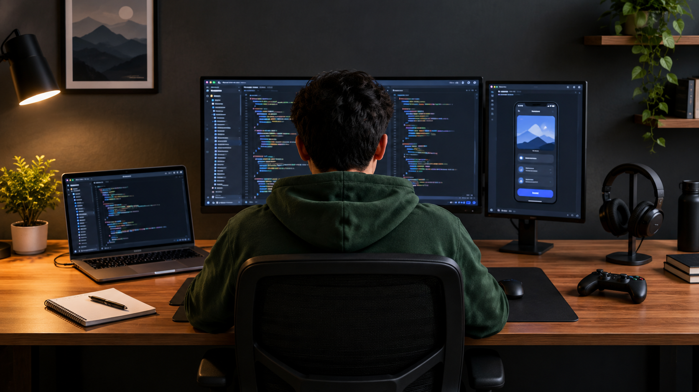
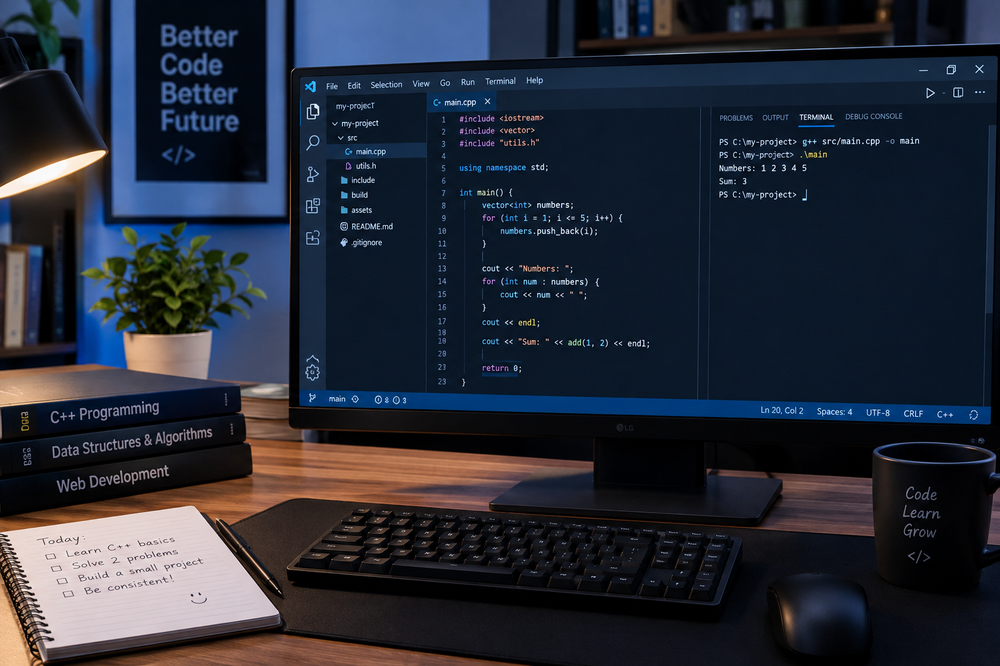

Introduction
Coding is the process of giving instructions to a computer to perform specific tasks. Today, programming is used to develop websites, mobile applications, games, and many other technologies. Learning coding may seem difficult at first, but anyone can begin with the right approach, regular practice, and patience.
Beginners often feel confused about which programming language to learn and where to start. The best solution is to follow a simple roadmap and focus on understanding the basics instead of trying to learn everything at once. This blog explains some useful steps for starting your coding journey.

Following steps should be follow
Step 1: Choose Your First Programming Language
The first step is to select a programming language.
Python is known for its simple syntax, while C++ is
useful for learning programming fundamentals and
competitive programming. Java is another popular
choice for software development.
Do not worry too much about choosing the perfect language.
Start with one language, learn its fundamentals, and
practise regularly before switching to another.
| Language | Best For |
|---|---|
| Python | Beginners and Automation |
| C++ | Problem-solving ans DSA |
| Java | Object-Oriented Programming |
Step 2: Learn the Fundamentals
Every beginner should understand variables, data types, operators, conditional statements, loops, functions, arrays, and strings. These concepts are the building blocks of programming. Once you understand them, solving problems becomes easier and more interesting.
Important Topics to Learn
- Understand variables and data types.
- Practise if-else statements and loops.
- Learn functions,arrays,and strings.
- Solve beginner-friendly coding problems.
- Build small projects using your knowledge.

Step 3: Practise Every Day
Watching tutorials is helpful, but practical experience is even more important. Try writing code yourself instead of simply copying examples. When you face an error, read the message, identify the problem, and try to fix it. Debugging teaches you how programs work.
Tips for Beginners
- Practise coding for at least 30 to 60 minutes daily.
- Start with easy problems and increase the difficulty gradually.
- Read other people's code to learn different approaches.
- Keep your programs organised and write meaningful names.
- Stay patient and learn from your mistakes.
Step 4: Build Small Projects
Projects help you apply what you have learned. Beginners can start with a calculator, a number guessing game, a simple quiz, or a personal webpage. Completing a small project gives you confidence and helps you understand how different concepts work together.
You can also explore free learning resources such as
CP/DSA in C++:
Competitive Programming by luv
Java :
DSA in Java by Raghav Sir
Web development:
Code with harry
Conclusion
Learning coding is a journey that requires consistency, curiosity, and patience. You do not need to be an expert to begin. Choose one programming language, understand the fundamentals, solve problems regularly, and build small projects. Avoid comparing your progress with others because everyone learns at a different pace. Remember, the goal is not to write perfect code on the first attempt but to improve with every practice session. Start today, stay consistent, and gradually become a better programmer.
Return to the learning plan to review essential topics.